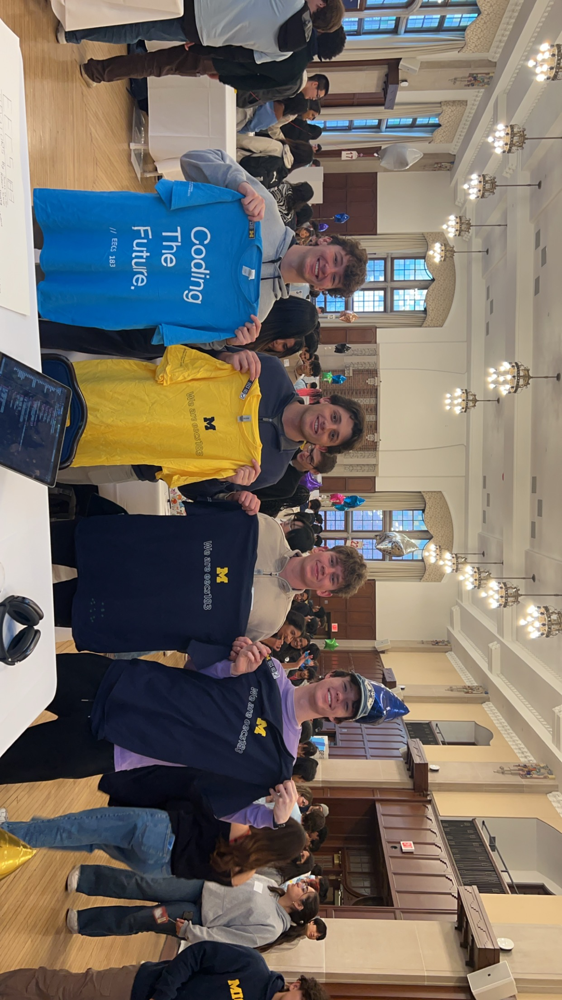
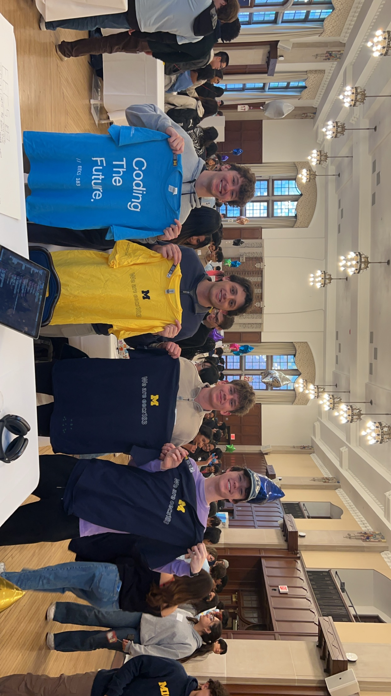

About Me
I come from a family of seven, and as the middle child, I learned early how to listen, adapt, and find my place in a busy environment. Growing up, I spent a large part of my childhood living abroad in Japan and China from ages 7 to 14. Those years shaped how I see the world — being immersed in different cultures at a young age taught me independence, curiosity, and an appreciation for perspectives beyond my own.


I graduated from U of D Jesuit in 2021 and began my college journey at Henry Ford College, where I attended from 2021 to 2023. During my time there, I played baseball and served as team captain in my second year, an experience that strengthened my leadership skills and reinforced the importance of accountability and teamwork. I also earned my associate’s degree in General Studies, which gave me a broad academic foundation and the confidence to take on more challenging work.
In 2023, I transferred to the University of Michigan to pursue a degree in Data Science. Since then, I’ve focused on building systems that turn real-world data into meaningful insights, combining technical rigor with practical application. My background — spanning different countries, teams, and academic paths — has shaped how I approach problems: thoughtfully, collaboratively, and with a long-term mindset.
 
